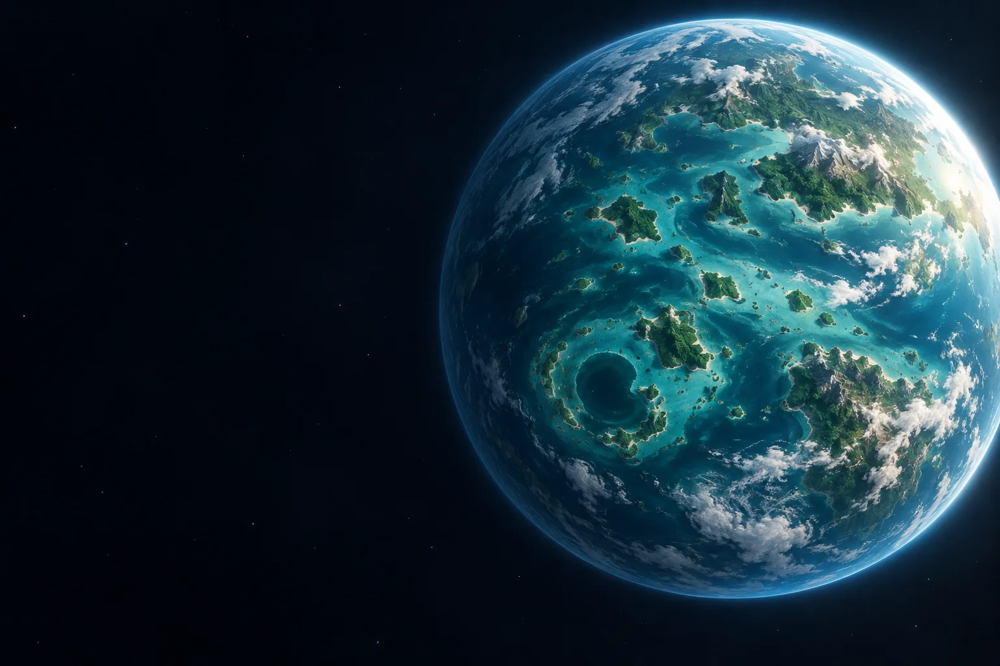

← Tous les projets
Unity · Game jam
GlouGlouParc
Une game jam Unity, du GameManager aux événements et à l’intégration visuelle.
- Unity
- C#
- ShaderLab
- Cadre
- Game jam
- Moteur
- Unity
- Langages
- C# / ShaderLab
- Domaine
- Gameplay / intégration
01
Le projet
GlouGlouParc est un projet collectif Unity réalisé dans un contexte de game jam. Le travail réunit programmation gameplay, effets visuels, interface et intégration des scènes.
02
Ma contribution
- Développement du GameManager et d’événements de jeu.
- Ajout de particules liées à l’interface.
- Intégration et correction des scènes, de la musique, des arrière-plans et des éléments visuels.
03
Ce que j’en retiens
Prioriser les fonctionnalités essentielles et intégrer rapidement les contenus.
Finaliser un projet collectif sous contrainte de temps.
CONTACT
Me retrouver
Mes jeux et mon code.